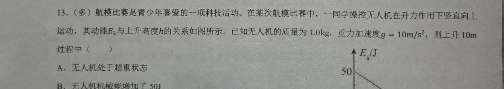

航模 · 多选 · 答案：B、D | 拖拽沙盘交互
← 返回互动课件
读数示例：因 e₀=50 J ⇒ v₀=√(2e₀/m)=10 m/s；斜率 dEk/dh=−5 N 即 F合=mg−F升 ⇒ F升=5 N。
总评：本品命中「图像与动能定理」(phy0857)、「动能定理地位」(phy0828)、「由图像分析机械能」(phy0899) 与「电梯升降超失重」(phy0354)，契合度高（4 张）。核心缺口在「Ek–h 图的几何斜率即合外力做功」这一可直接读图的信号，已补卡一张。
| 卡 | 知识点 | 契合 |
|---|